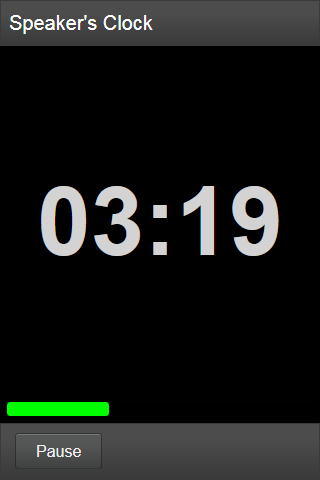
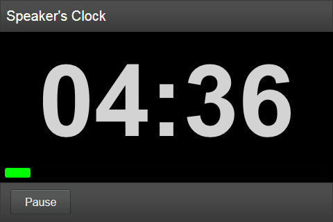
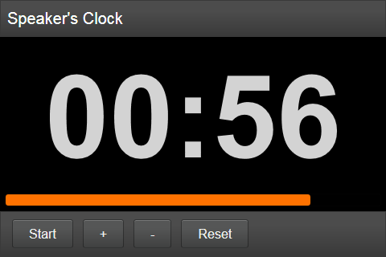

Speaker's Clock
A small countdown app that helps speakers to watch their time.
Built from scratch and with Enyo.js on the FirefoxOS App Day in Berlin.
Get it on the Firefox Marketplace!
How to Use
- Use the +/- buttons to set the desired minutes.
- Push longer to advance fast.
- Push Start to set off.
- Push Pause to, well, pause.
- Or just touch the time display for start/stop.
- Push Reset to set time back to the previously set minutes.
- Use in portrait or landscape mode - the display nicely adapts.
- Watch the progress bar change color while time runs out.
What's Missing
- Speaker's Clock does not prevent the screen from switching off.
- A configuration option to save the preferred start time.
- An About page
Screenshots

Speaker's Clock in portrait mode

Speaker's Clock in landscape mode

Speaker's Clock paused
How to use the source
The source packages (see the download section at the top) and the source on GitHub are not working as they are. You need first to clone the Enyo.js Bootplate repository (see the enyo Wiki) and then copy the contents of the download package over the Bootplate repo. Then open debug.html in your browser.
License
Speaker's Clock by k5e is licensed under the Creative Commons Attribution Share-Alike License v3.0 or any later version. Enyo.JS's license is Apache License Version 2.0